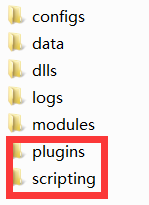
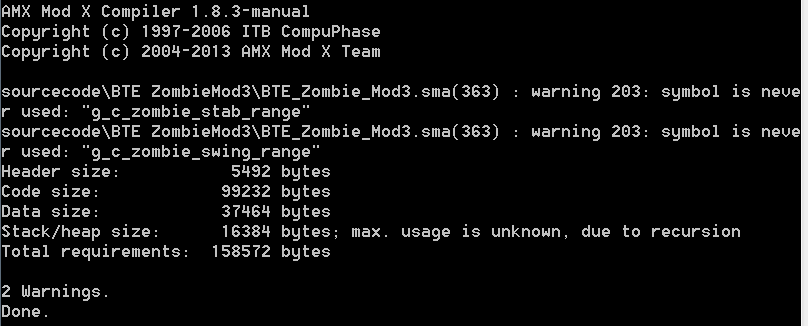
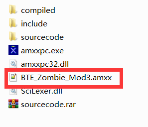
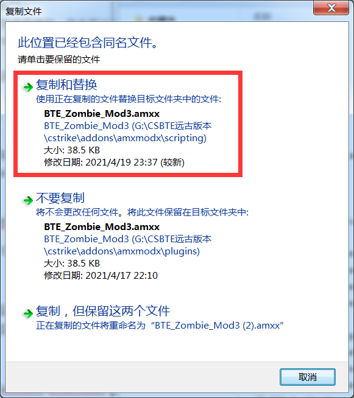

CS-BTE如何控制英雄的产生
前言
如果你是个CSOL的上古玩家（12年及以前），一定知道当时很热门的生化模式3，也许你也跟我一样，希望自己变身人类英雄的概率增加，或者干脆每把都希望自己变英雄。当时已经有不少一些高仿CSOL的单机版了，比如CSO-NST，我也有玩过，不过当时啥也不懂，也不懂编程知识或者CS插件管理之类的（虽然现在还是没了解过CS插件这一套代码）。前几天搞到了一份CS-BTE大概15年左右的版本，还是老生化模式的数据，就琢磨着怎么让自己每盘都变成英雄，花了两个小时研究插件源码，终于搞定了，接下来把自己的经验说一下。
先声明本人不是专业的CS插件制作者，这次修改也只是为了满足自己小小的需求，所以就不要来问我其他的一些东西咋改了，我其他地方的代码都没看过。
注：事后发现并非所有CS-BTE版本都自带源码文件，找了好久也没发现CS-BTE是否有官网，Github上找了一圈也没有对应的项目，可能制作团队不打算开源吧…总之，如果没有源码文件，就可以放弃了…
定位源码
首先第一步，需要知道cs的插件都是用AMX MOD X来管理的，这项目在Github上还有repository，官方文档的api文档也比较齐全，总之，如果你想做half-life或者cs 1.6的插件，肯定绕不过它的。
进入cs根目录的cstrike\addons\amxmodx目录下。

这里需要说明一下，plugin目录是用来保存编译过的cs插件，即amxx后缀的文件，scripting目录内则一般放源代码文件和代码编译器，scripting目录不是必须的，就算没这目录，cs也可以正常运行各种插件。
在我们继续下一步之前，你必须确认一下你的cs目录里有没有.sma后缀的文件，这种文件是amxmodx的源码文件，如果有这种文件，可以顺腾摸瓜找到僵尸模式的插件源码文件，比如我这版本里，僵尸模式3的代码文件叫做BTE_Zombie_Mod3.sma。
进入scripting目录，介绍一下，sourcecode目录是用来存放sma源码文件的，我们要修改的僵尸模式3的代码就在其中，而amxxmpc.exe是amxmodx的编译器，修改好代码后，我们需要使用这个编译器来将代码编译得到amxx文件。
上面这些是一些基本的概念，接下来就来看一下英雄产生的源码吧。
找到sourcecode目录内BTE ZombieMod3\ZombieMod3目录中的Public.sma文件。
搜索一下Make_First_Zombie函数，这个函数的主要作用就是在倒计时结束后产生一定数量的僵尸和英雄。
其中有一段这样的代码，具体是啥可以看一下我写的注释。
//有30%的几率产生英雄
if(random_num(0, 9)>6)
{
new szHeroMsg[128];
//最少产生一个英雄
new iZombieNum = 1;
iZombieNum += random_num(0, iInGame / 10);
iZombieNum += random_num(0, iInGame / 10 - 1);
new iRan
//随机选取iZombieNum个玩家，将他们变成英雄
do
{
iRan = GetRandomPlayer(2)
if(!iRan)
return
if(!g_hero[iRan]) Make_Hero(iRan)
} while (--iZombieNum)
new name[32]
new iTotalHero = 0;
new iSendMsg = 0;
for (new id = 1; id <33; id++)
{
if (g_hero[id])
iTotalHero += 1;
}
for (new id = 1; id <33; id++)
{
if (g_hero[id])
{
iTotalHero --
get_user_name(id,name,31)
format(szHeroMsg, 127, "%s%s%s", szHeroMsg, name, iTotalHero ? ", " : "")
iSendMsg = 1;
}
}
/*format(szHeroMsg,127,"%L",LANG_PLAYER,"BTE_ZB3_HEROINFO",szHeroMsg)
if(iSendMsg) client_print(0,print_center,szHeroMsg)*/
if (iSendMsg)
ClientPrint(0, HUD_PRINTCENTER, "#CSBTE_ZB3_HeroSelected", szHeroMsg);
}
可以看到英雄不是每一局100%产生的，是有70%几率不产生的，如果你想要100%产生英雄，将第一个if的条件改为random(0, 9) > -1即可，或者其他永久为true的条件也可以…
随后如果你想让自己变成英雄，可以用下面这段代码插入到new IRan后面。
1 | //find_player函数可以用来找到一个玩家，第一个参数"a"代表通过名字来找玩家，第二个参数则是查询条件，比如我在游戏中使用的昵称叫"zenox" |
至于为什么要用if(!g_zombie[iRan])这个条件来判断，如果不加的话，会出现同时变僵尸和变英雄的神奇画面。
编译和覆盖插件
回到cstrike\addons\amxmodx\scripting目录下，使用cmd进入这个目录，并使用下面这个指令来编译源码文件，为什么修改的是Public.sma，而编译的是BTE_Zombie_Mod3.sma呢？因为这个文件引用了Public.sma文件，编译它，就把Pulic.sma连带着一起编译了。
amxxpc.exe “sourcecode\BTE ZombieMod3\BTE_Zombie_Mod3.sma”
如果编译成功，最后应该会显示一个Done，至于Warning，这个就不管他了。

随后应该可以在scripting目录下发现这个文件，这个amxx文件就是新编译的插件文件，接下来将其覆盖到cstrike\addons\amxmodx\plugins目录下即可。

覆盖编译生成的amxx文件到cstrike\addons\amxmodx\plugins目录下，如下所示。

随后，进游戏试试看，你应该可以每把都变英雄了…当然这里只是简单修改一下英雄产生的逻辑，如果你有自己的想法，也可以改成自己想要的样子。